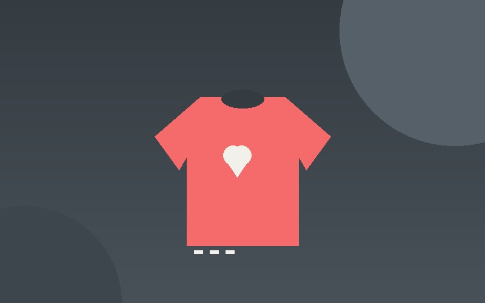
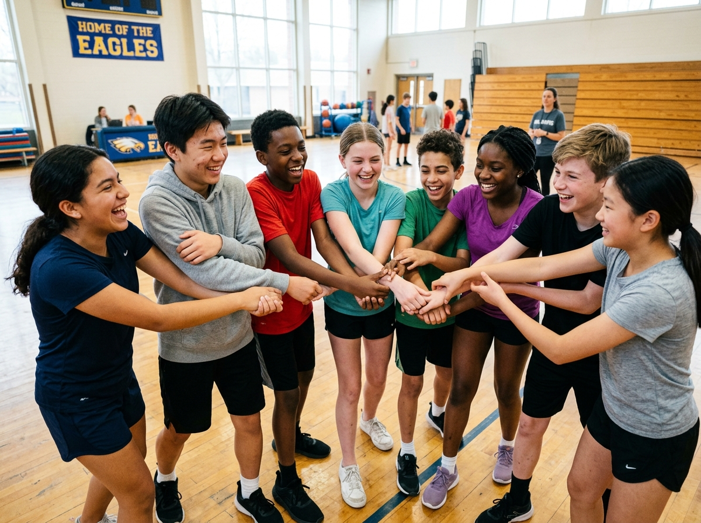
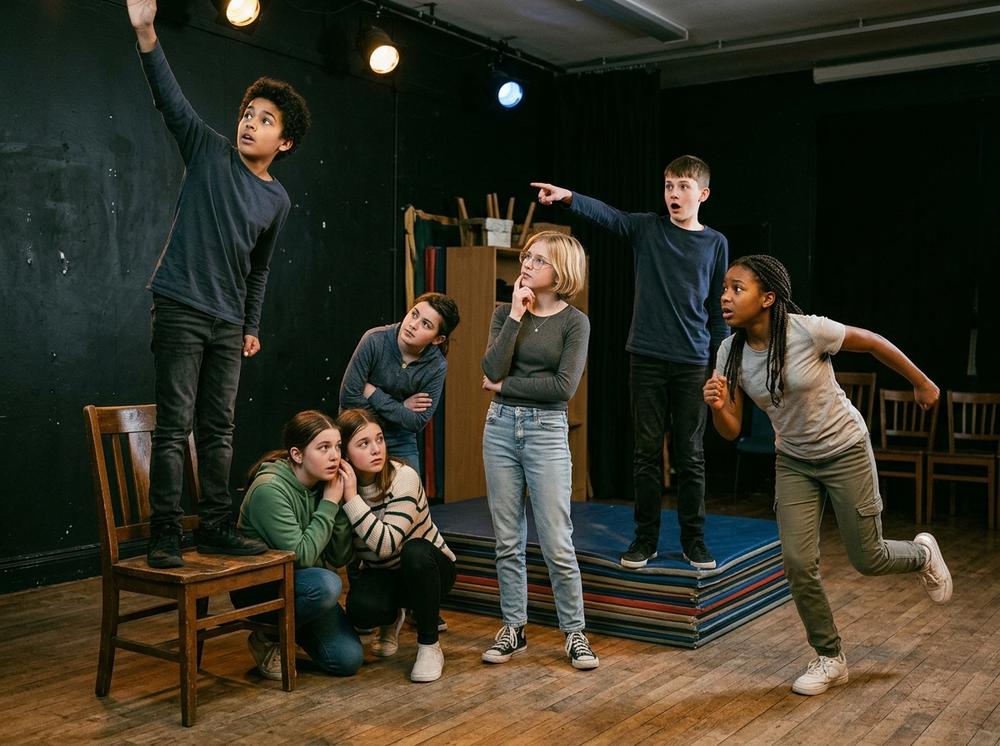
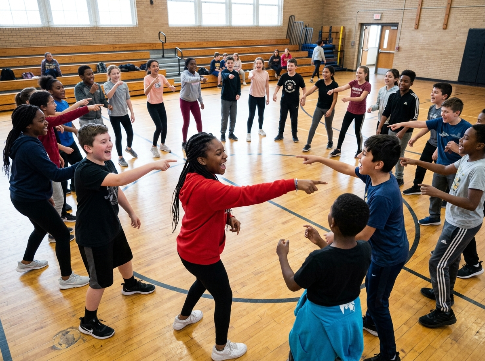
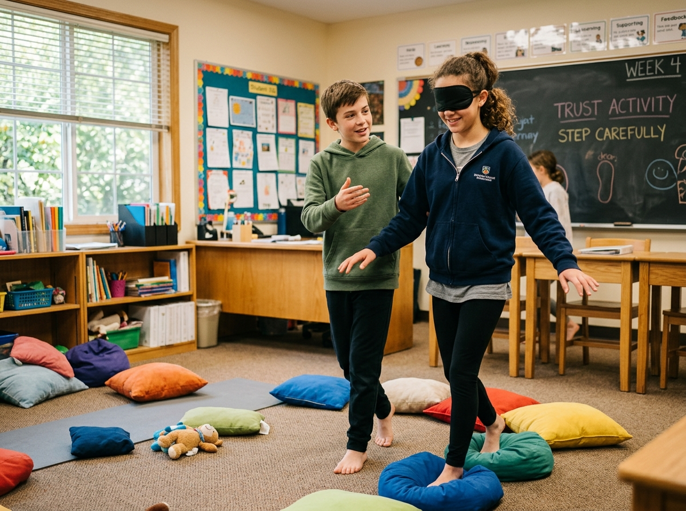
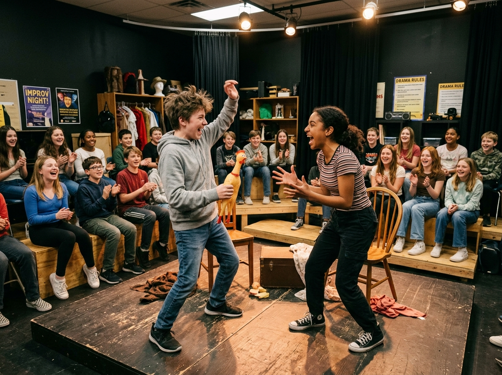
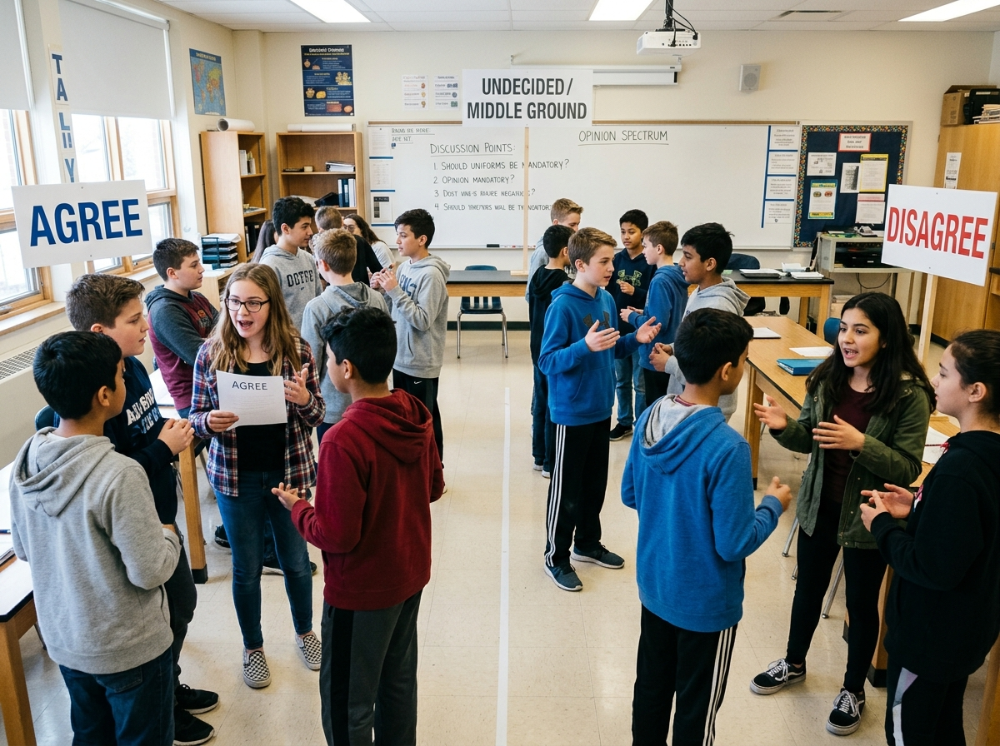
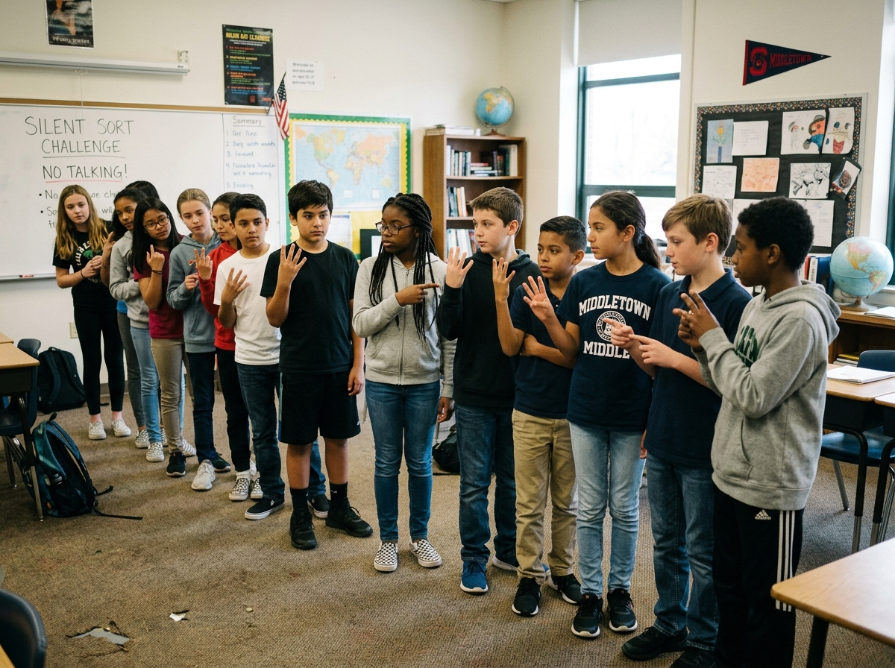
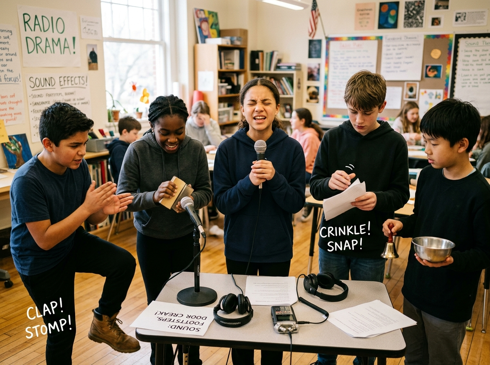
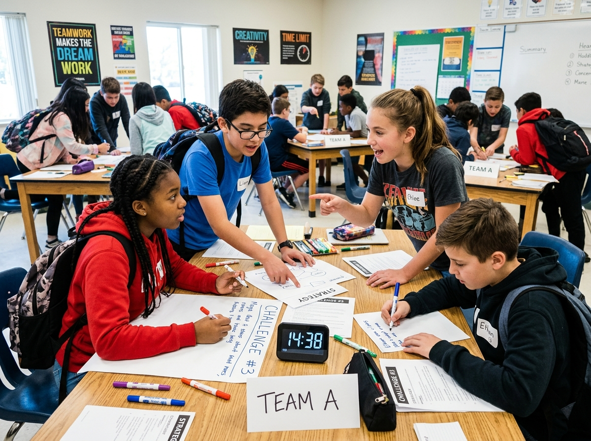

Career & Lifestyle Exploration
A guided career and lifestyle planning unit where students use digital self-assessment tools to analyze personal traits, lifestyle goals, education pathways, and future employ...
A guided career and lifestyle planning unit where students use digital self-assessment tools to analyze personal traits, lifestyle goals, education pathways, and future employ...

A school-wide year-long rotating modular program where students rotated through specialized teacher-led modules: Mental & Physical Coping Strategies, Nova Scotia Continuum Ski...

An interdisciplinary engineering and environmental design challenge where students examine how climate change, population density, renewable energy technologies, and cultural ...

A dynamic rotational curriculum organized into 3-to-5-week thematic blocks. Students remained anchored in homerooms while specialist educators rotated through, facilitating de...

A high-energy, rapid-iteration structural design sprint where student teams repurpose upcycled materials (empty bottles, sticks, paper, twine) into the tallest, most cost-effe...

A purely student-centered inquiry model where learners formulate authentic driving questions and produce original passion artifacts ranging from hand-laminated hockey sticks a...

A holistic instructional intervention engineered to repair collaboration gaps, social communication anxiety, and problem-solving stamina through structured debate protocols an...

A civic entrepreneurship challenge where students conduct audits to identify unmet community needs, design viable product or service solutions (addressing demographics, fundin...
An interdisciplinary pairing between Grade 7 Science Engineering Structures and maker time in ILT. Students explore compression, tension, shear, torsion, and triangular trusse...

A two-phase hybrid model where Phase 1 features an 8-week rotation of 1-hour teacher-led workshops sharing personal passions (coding, Muay Thai, sustainable fashion, architect...

An applied mechanical engineering competition where students design, construct, and calibrate a fluid-powered mechanical lift. Utilizing syringes, tubing, and mechanical linka...
Students inherit a staged, fictional 'cold case' left behind by a departing detective: a mock crime scene, ambiguous physical evidence, and conflicting witness statements. Acr...
A working audio production studio for one term. Student teams deconstruct great narrative podcasts, pitch a three-episode season on a topic they care about — local history, a ...
Students first play, then reverse-engineer, then build: teams design and construct a physical escape-room experience that teaches a specific curriculum outcome — a fractions v...
A one-day cardboard challenge stretched into a full economic cycle: teams invent and iterate upcycled arcade games, design a class currency, price and market their games, then...
The school becomes a small controlled-environment farm. Students run two full grow cycles of microgreens under LED lights — the second as a designed experiment varying light o...

Students become the archivists of their own community. After studying primary sources and local change over time, each team researches a neighbourhood theme — the fishery, the...

A working design studio with a real client: younger students. Teams analyse what makes mentor games teach, choose one specific curriculum outcome, and build a tabletop or Scra...

Part textile atelier, part consumer-advocacy campaign. Students investigate the lifecycle and hidden costs of a fast-fashion t-shirt, learn sewing and visible-mending skills, ...
Students adopt a nearby green space and turn it into a living classroom. They run baseline species surveys with iNaturalist, map and design an interpretive trail, research and...

The class becomes a sports network running a term-long fantasy or simulation league built on real league statistics. Students draft teams, manage rosters through weekly stat c...
Ten quick-deploy drama games and teambuilding activities designed for a single ILT block (45–90 minutes). Grade 7–9, minimal or no resources required. Ideal for first-week community building, transition days, or substitute teacher days.

Students form circles of 8–12, reach across to grab two different hands, and must untangle their human knot into a clean circle without releasing grips. Progressive rounds add...

Students create frozen, silent 'photographs' using their bodies to represent concepts, emotions, historical moments, or story scenes. Groups sculpt tableaux, the audience inte...

A progressive sequence of classic drama circle games — Zip Zap Zop, Bippity Bippity Bop, Energy Pass, and Whoosh — that build ensemble focus, reaction speed, playful risk-taki...

Partners navigate a 'minefield' of scattered objects — one blindfolded, one guiding with voice only. Progressive rounds escalate: first close guidance, then distance guidance,...

A structured improv workshop building from low-risk warm-ups (Word Association, One-Word Story) through paired scenes (Yes-And, Gibberish Translator) to group performance game...

Students physically move to positions along a classroom spectrum (Strongly Agree → Strongly Disagree) in response to provocative but age-appropriate statements. After each mov...

Students must arrange themselves in order (birthday, height, alphabetical by middle name, shoe size) without speaking, using only gestures, facial expressions, and creative no...

Teams build stories collaboratively through relay formats — one sentence at a time, conducted storytelling (teacher points to next narrator), and genre-switch challenges. The ...

Students explore the concept of social 'status' — high-status (confident, space-owning) vs. low-status (small, apologetic) body language — through progressive drama exercises....

Teams of 5–6 receive a sealed 'mission briefing' containing 4–5 linked micro-challenges that must be completed in sequence within a strict time limit. Challenges are designed ...
Pilot Exemplar: Future Cities & Sustainable Urban Planning (13–16h, STEM & Climate Resilience).
Integrated Learning Time (ILT) empowers junior high schools to implement cross-curricular inquiry, build provincial continuum skills, and foster student agency.